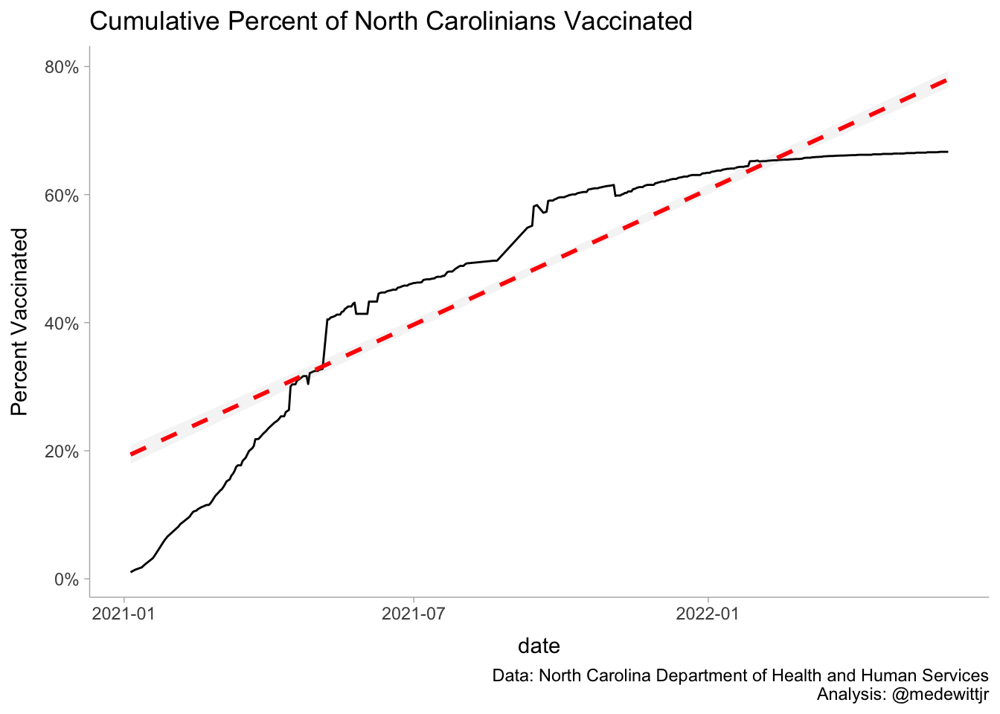
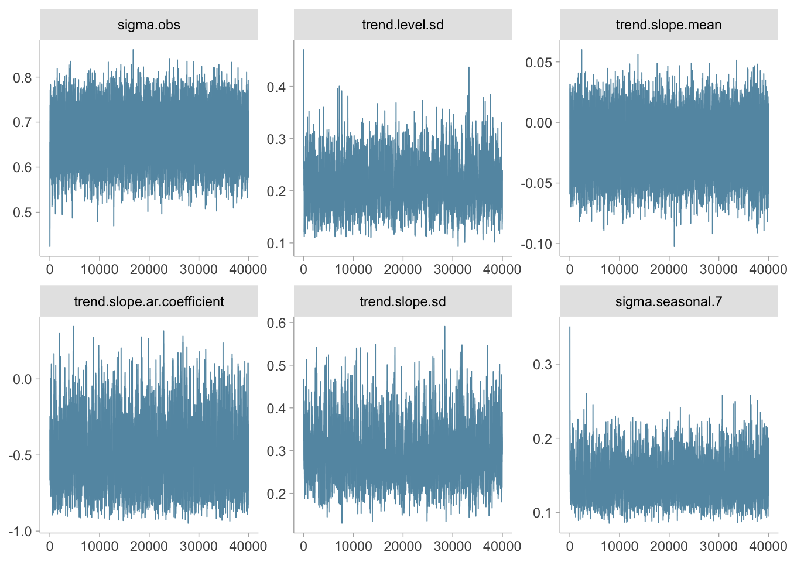
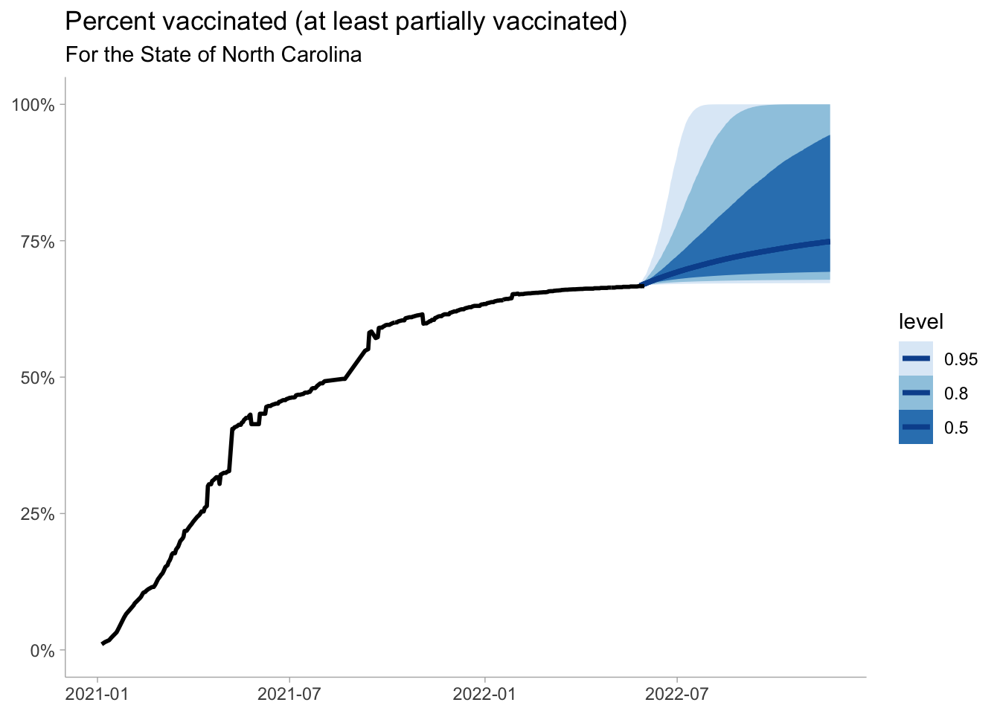

This post is completely inspired by @mjskay ’s very interesting analysis/ critique of a New York Times linear extrapolation of when the United States would reach the critical proportion for vaccination. The New York Times has made some amazing graphics during the pandemic, but their analyses have been pretty spotty. Between this linear extrapolation of vaccination rates and their SIRs for third and fourth waves, they really need to put some additional thought into the more math heavy type work.
I try to avoid the whole “herd immunity” lingo. In Anderson and May, the refer to the “critical proportion” at which herd immunity protection effects kick in. I like this formulation a bit better.
Matt uses Bayesian Structural Time Series implemented in the bsts package(which I really like) in order to make a more nuanced analysis. Additionally, because we know that the percent vaccinated is monotonically increasing and bounded between 0 and 1, we can make some transforms to our data.
North Carolina
I along with some work colleauges have been maintaining a package called nccovid (available at remotes::install_github("conedatascience/nccovid)) which allows for ready access to North Carolina COVID-19 related data. This does not represent the views of my employer.
── Conflicts ────────────────────────────────────────── tidyverse_conflicts() ──
x dplyr::filter() masks stats::filter()
x dplyr::lag() masks stats::lag()
library(lubridate)
Attaching package: 'lubridate'
The following objects are masked from 'package:base':
date, intersect, setdiff, union
library(ggdist)library(tidybayes)library(bsts)
Loading required package: BoomSpikeSlab
Loading required package: Boom
Loading required package: MASS
Attaching package: 'MASS'
The following object is masked from 'package:dplyr':
select
Attaching package: 'Boom'
The following object is masked from 'package:stats':
rWishart
Attaching package: 'BoomSpikeSlab'
The following object is masked from 'package:stats':
knots
Loading required package: zoo
Attaching package: 'zoo'
The following objects are masked from 'package:base':
as.Date, as.Date.numeric
Loading required package: xts
Attaching package: 'xts'
The following objects are masked from 'package:dplyr':
first, last
Attaching package: 'bsts'
The following object is masked from 'package:BoomSpikeSlab':
SuggestBurn
library(patchwork)
Attaching package: 'patchwork'
The following object is masked from 'package:MASS':
area
library(tidyverse)library(posterior)
This is posterior version 1.2.1
Attaching package: 'posterior'
The following objects are masked from 'package:stats':
mad, sd, var
theme_set(theme_ggdist())
And now we can pull in the North Carolina data:
dat <- nccovid::get_vaccinations()nc_oa <- dat[,.(people_partial_vax =sum(people_partial_vax, na.rm =TRUE),population =sum(population, na.rm =TRUE)), by ="date"] %>% .[,vax:=people_partial_vax/population] %>% .[order(date)]
It’s good to plot these data just to make sure they “feel” right.
nc_oa %>%ggplot(aes(date, vax))+geom_line()+labs(title ="Cumulative Percent of North Carolinians Vaccinated",caption ="Data: North Carolina Department of Health and Human Services\nAnalysis: @medewittjr",y ="Percent Vaccinated" )+scale_y_continuous(labels = scales::percent)+geom_smooth(method ="lm", color ="red",alpha = .1, lty ="dashed")
`geom_smooth()` using formula 'y ~ x'

Running Percentage Vaccinated
So we can see that linear fit for North Carolina likely isn’t valid, at least not in the last few weeks. Regardless, we have out data for the next steps of the analysis.
Data Transformation
As I mentioned earlier and a critical point of this analysis is that we know a few things about vaccinations. Firstly, vaccinations are non-reversible and are thus monotonically increasing (e.g., they can only increase). Additionally, depending on the definition you take, the percentage of the population vaccinated with a first dose is bound between 0 and 1.
It’s a bit of a joke. I suppose someone could have multiple first doses if you change the definition to the manufacturer of the vaccine.
With these features in mind, we can use a logit transform on our vaccinations and then fit that on our data.
All of the Gelman-Rubin statistics look good as well as the effective sample sizes, so I’m happy with what I see. However, it is always good to visualize the outputs as well:
bayesplot::mcmc_trace(draws)

Trace plots look pretty good as well.
Predictions
Now we can predict out with our model for 180 days.
Now we can visualize the outputs. We see that there is a high degree of uncertainty regarding what proportion of the population will likely be vaccinated in the coming 180 days.
widths =c(.5, .8, .95)pred_vax %>%ggplot(aes(date, vax)) +stat_lineribbon(.width = widths, color ="#08519c") +scale_fill_brewer()+geom_line(data = nc_oa, size =1)+labs(title ="Percent vaccinated (at least partially vaccinated)",subtitle ="For the State of North Carolina",y =NULL,x =NULL )+scale_y_continuous(limits =c(0,1), labels = scales::percent_format())

The next big question is what will be our likely vaccine coverage. If we want to target 80% of the population vaccinated, which is aggressive, but needed if \(R0\) of SARS-CoV-2 is close to 4-4.5 and the vaccine effectiveness is between 90-95%.
![]()